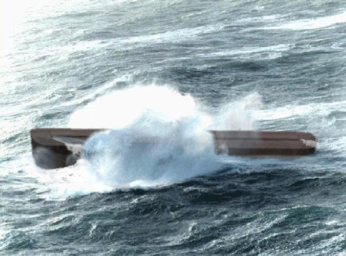
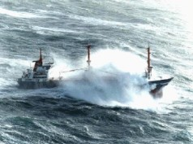

Compilation of threads in response to Tim's comments on suggested design of bow/stern of Noah's ark. All messages were posted April 13,14 2004. I hope I got them all.
Jim King has been given this link. This page remains unlinked from the homepage and all email addresses have been removed.
Tim is discussing with Jim the possibility of doing an article to present this case in an open forum. (probably a TJ paper?)
Many thanks to all contributors, and especially Andrew in the middle. I hope this can result in some further progress on ark design and understanding.
(...and I wouldn't mind sticking a sock in the sceptic's mouths well and truly...)
Tim April 16, 2004.
Summary (by the not-very-unbiased 'moderator' Tim Lovett) Top
Summary of arguments against square ends;
More pronounced pitching
Wave slamming, and risk of waves breaking onto the roof increased
Difficult structural detailing - esp in vertical corner region
More difficult to keep the vessel pointing into the wind and waves.
Summary of arguments defending square ends;
Not under power: Mark
Tsunami waves only. Mark (assuming no high winds)
Relatively small waves: Mark, David (perhaps), Jono (implied by Freedom ship reference)
The word 'ark': Jono
Tim's favourite quotes; (oh dear, Jim's not going to like this...)
Jono "even a 210-knot wind (three times hurricane force) could not overcome the Ark’s righting moment". Tim: 210 knot wind and no waves? This is misleading.
Jono "an enormous barge with similar proportions to the Ark...a mile long...". Tim: The ark is not big enough to dwarf the waves in the open sea.
Jono "this small increased stability would be more than offset by the lower economy of material where the Ark was concerned". Tim: Werner Gitt optimization doesn't even consider hull strength.
Jono "As long as it is rectangular to a good approximation, it's reasonable to call it a box." Tim: But its the same word as Moses reed basket - was it perfectly rectangular? - not likely.
Jono "Morris's analysis concerns only static stability" Tim: Morris, Collins and Gitt are all calculated in static equilibrium.
Mark "I was thinking more of tsunamis, rather than wind generated waves." Tim: Gen 8:1
David "Which way would a "box"-shaped Ark have faced..." Tim. If you want it to point into the waves it helps if you make it pointy.
Do these people all want small waves?
Mark "If you are side on, does it really matter that much" Tim. Yeah, about force 5 or 6 and you're a fossil - or fish food.
Mark "the depiction of massive waves needs to be considered as well." Tim: Quite possibly. This is alluded to by Woodmorappe.
David "Perhaps the Genesis 8:1 wind was 10-15 knots"
Issues to follow on with
David " What does "wind" mean" Tim: Comparison to Biblical references to 'strong' winds. Nice idea. We are talking about a 'face of the earth' scale here though.
David " passively swept along by waves and wind" Tim: Potential for harmless enormous waves depending on the degree of wave confusion. Worth checking this out - perhaps an extremely consistent wind will produce a perfect waveform without interference from superimposed wavetrains - and the potential for steepness/rogue formation. Gen 8:1 would appear to be a very consistent, unidirectional wind.
Conclusion
Quite bluntly, why have blunt ends? I can't see any particularly conclusive evidence to prefer them over anything else. Not structural, not seakeeping, not literary. Only an imagined ease of construction and a tiny increase in volume. (5%)
Only one justification has been given here - relatively small waves. Have another look at the AiG picture below. Tim thinks there might be a bit of filling in needed between the scientific arena and the artistic impressions. Hey - an artistic engineer!
Tim
A picture's worth a thousand words...
AiG's most popular depiction of Noah's ark. A rock, green water above the roof, almost square bow of Rod Walsh's ark...

About as far as I'd take it. I rounded the hull a bit more, but not obviously. Spray is OK, but green water would be a design issue - window hatches etc...

Original photo. Bow is airborn. Notice how the bow sliced the wave. Can't do that it it's blunt. Whether under power or not, a ship must point into the waves in this sort of weather. It's well known for a ship to be driving into the wind but end up 50km backwards at the end of the day.
So... TJ it?
Tim (to Andrew Lamb & rest of Tim's update list)
Worldwideflood.com Update. April 10, 2004
What WWF
is doing..
All attention
is on the hull structure - it's holding up everything else.
And a
finger in the pie...
Hot on the
heels of the AiG Creation Museum, Hong Kong will see the construction of a
creation museum and expo centre in a building replicating a full scale Noah's
Ark.
Mel Gibsons'
Passion of the Christ is spurring on other Biblical films - such as the Flood
Film Project. Good stuff.
Diluvia
(3d)...
After the
thumbs down signal from AiG, the lastest scene was taken off home page, but you
still get it from the download page. (waiting until game forum cools down).
Made inquiries
to buy www.diluvia.com but the owner wants too much. ( for our level of
commitment to the name anyway)
Hits (page) at
approx 1200/month, 35 countries represented.
A big slice of
the download MB is from the 3dGameStudio forum - a little creationist exposure
for all those who have to visit the site to download the game scene.
Welcome
to Ark Modelers..
If you have an
ark model, we are planning a page showing model photos, a brief description,
links etc.
Website
comments and corrections gratefully received.
(P.S...Don't
forget to hit the REFRESH button, so you force your browser to download the
latest page. Quite a few pages get little updates here and there)
Thanks
Andrew Lamb (to Tim)
Tim, did I send you copies of these two papers?: * David H. Collins, Was Noah's Ark Stable? Creation Research Society Quarterly 14(2):83-87, September 1977. * P.H. Van Der Werff, Thoughts on the structure of the Ark, Creation Research Society Quarterly 17(3):167-168, December 1980. Andrew
Tim (To Andrew Lamb)
Yes, you did Andrew. You sent me a lot of good stuff. Did you have something particular in mind. I have a high regard for Collin's article. The article is primarily the next step in roll stability after Morris brought the up the issue in his 1971 CRSQ 8(2). Collin's is doing the same as Werner Gitt - an integrated roll stability calculation in flat water - standard practice. Collins does make the comment "on first page - "The word ark signifies a box (Hebrew, tebah: Greek, kibotos)" (Search me what Greek has got to with it.) STRONG's says perhaps of foreign derivation (that's logical). AND....the same word is used for the reed basket of baby Moses. Ever seen a perfectly rectangular reed basket picture? Neither have I. So the idea of box or chest does not mean the only option is a block coefficient of 1. (Basically how close it is to a rect prism) Collins also says "The curvature of a ship's hull is primarily so that under propulsion it may gain additional speed". Yes, but also -"better seakeeping - less slamming" (One of 10 effects of reducing block coefficient. p 100 Ship Design for Efficiency and Economy H Schneekluth 1998.) It really comes down to wave size and the balance between a little extra cargo space (maybe 5% - we are only talking bow and stern extremities here, not the highly streamlined shape Collin's must be comparing to with his 30% space gain) vs improved seakeeping performance and structural efficiency. Collin's statement "rectangular construction would have been the simplest". Might be OK up to a certain size. But at the scale of the ark this is far from reality. He may have been imagining knocking up a few big logs and tacking on the planking, but it ain't good enough in the North Atlantic. (see attached pickie!) Rectangular --truss frame --heavy structural timbers --difficult joints --heaps of metal reinforcing. In fact, he qualifies his thinking with the statement "they wouldn't have to bend timber and planks to suit the curvature", which implies he is imagining the bending of big timbers. Curvature in laminated planking is a non-issue. Never-the-less, the curved ends are not all plain sailing - it's still a tricky area at the termination of bilge radius. I'm working on a timber page - and the gopher thing of course. Then its da da.... first design stab.... Coming from the rectangular hull end, there is a big issue with having ANY radius at all in the bow/stern vertical edges. (you can detail either no radius or big radius, but a tight radius is near impossible) I'm feeling a bit like a roundish ended version of Rod's ark. Talking with Rod about his structure at the camp, I was grilling him on the detailing of bow and stern radius. He said it was a problem. This is a very nasty area structurally, and the difficulties with bluntness in big waves is well documented - so from structural and seakeeping point of view a well raked rounded (like the bottom half of a barrel) structure would come out pretty much the peak structure. This allows a true monocoque with continuous skin, a nice place to put ramps, pumps etc, and extremely strong. Large bulk carriers today have an elliptical bow. If this is a bit too unconventional for AiG to swallow, the radius could be reduced to give a small flat section at bow and stern - but more tapered ends makes for better heavy sea performance. Right from the start Jim King was adamant that the big flat ends won't do. I hope this area can attract some discussion, it really is SO important - especially if we want to have a big sea. Van der Werf: The log raft is a problem. High centre of gravity. Where do you measure you're height from - the logs use up the entire lower deck at least! And if not, then you just increased depth by 30%. His comment "the joints would open" is a good point. But not solved this way. Might work on a lake.
Andrew Lamb (To: Carl; David; Don; Gary; Jono; Mark ; Pierre; Tas ; Warwick ; Peter Sparrow)
Tim Lovett and James King (U.S. creationist Naval architect, Creation 23(1):31) have serious problems with a square-ended or minimally-rounded Ark.
Andrew
Mark
My experience in boats is that if you don't have any drive you end up side on to the waves, whereas, under power, if you don't want to roll too much, you put your bow perpendicular to the waves as much as practical. The comments about bluntness and slamming makes sense for boats underway, but if you are side on, does it really matter that much? I trust God was gracious to the occupants, or they had better stomachs than I. Then again, if the Ark was guided over deeper water, the roughness may not have been such an issue, so the depiction of massive waves needs to be considered as well.
Tim
Aaah, now this is the sort of discussion that needs discussing... Side on ? We'd better tone down the Noah's ark pictures then. Of course, it also brings into question why God would make the hull 6:1 if it was going to be running breach anyway. Better off with a fat little tub. And you'd have no fear of Hong's 47.5m waves, its the roll resonant little fellas you'd have to watch. "comments about bluntness and slamming makes sense for boats underway, but if you are side on, does it really matter that much?" Refer to the 8 seakeeping factors analyzed in the Hong study - one of them is slamming; http://www.worldwideflood.com/ark/safety_aig/safety_aig.htm#seakeeping_performance Check out the statement just above the 8 points; (Hong study: Since the Ark had a barge-type hull form and the speed was nearly zero, the following seakeeping items were investigated:... ) I'll go for Hong here. "Deeper water...roughness" What's the link here? - we are talking wind generated waves, not tsunamis. "so the depiction of massive waves needs to be considered as well." Is this fore or against? Sounds against I think.
Mark
I'm a bit lost with the terminology, nor have I understood all of Hong's article, but why would a fat little tub be better (like Utnapishtim's cube?) spinning around. Comparing boat 0 (Biblical dimensions) with boats 9 and 10 (shorter, fatter boat) in Hong's article. The Ark come up better for all but the vertical acceleration at the Forward Perpendicular point. Boat 12 (long and skinny) has the best rating overall. Hong assumes equal probability of waves from all directions. It would be interesting to rerun his numbers assuming that the Ark was running breach say 90% of the time. This is assuming that the Ark is not caught up in a hurricane. I was thinking more of the global tidal, earthquake and volcanic generated waves, rather than wind generated waves.
Tim
"I was thinking more of the global tidal, earthquake and volcanic generated waves, rather than wind generated waves."
No one else is. This is strictly wind waves right now. Most writers ignore deep water tsunami effects due to extreme wavelengths. You can always read this if you want. http://www.worldwideflood.com/flood/waves/waves.htm Actually, I seem to be answering a lot of things which are already posted. I know its a big ask to get people to read but I will pick you up on this issue because it was dealt with in Woodmorappe which I would assume is compulsory reading...
"It would be interesting to rerun his numbers..."
It would be interesting to HAVE his numbers - wave bending moment, timber working stresses, etc that were left out of the paper... Aaaargh
"Comparing boat 0 (Biblical dimensions) with boats 9 and 10 (shorter, fatter boat) in Hong's article. The Ark come up better for all but the vertical acceleration at the Forward Perpendicular point. Boat 12 (long and skinny) has the best rating overall."
The longer hull wins because it is an average of response to waves from ALL directions, where far better pitching improves the number. But we were originally talking about a permanent breach condition which, in long or large waves, doesn't improve with hull lengthening - (assuming a shorter hull of Hong proportions, not Gilgamesh.)
But we know the proportions are not negotiable, its the detailing of bow and stern and the nature of the waves that I am targeting.
Dr David Catchpoole:
I'm NOT a naval architect. But, having sailed for many years in my youth in small blunt-ended dinghies ("Mirror" class --- best results: City of Adelaide Junior Champion; S.A. State Junior Champion), for me to be convinced that a square-ended Ark is a problem, I would first need to be convinced that the "wind" that God caused to blow over the earth (Genesis 8:1) could have caused a problem for any passively drifting craft as large as the Ark. Questions/comments:
1. What does "wind" mean? Genesis 8:1 says "a wind", not a strong wind, or powerful wind, or mighty wind, or destructive wind (cf. Exodus 10:19, 14:21; 1 Kings 19:11; Job 1:19; Isaiah 28:2). Perhaps the Genesis 8:1 wind was 10-15 knots? That would make most sense to me (see Table below) --- it's the "wind" most usually encountered at the beach on a Saturday afternoon in Australia. Most craft can handle it without any problem --- even in open water.
2. With theoretically unlimited "fetch" (i.e. the exposed water that wind can blow over without any land to interrupt/break waves), what height could the waves have built up to in winds of 15 knots? (I.e. before land became exposed as the Floodwaters receded.) What about 20 knots? Even in 25-knot winds the size of the resulting waves may have been dwarfed by the (above-water) sides of the Ark.
3. Which way would a "box"-shaped Ark have faced when drifting with a 15-knot wind? Side-on or narrow end facing into the wind (and waves)? Or perhaps with no inherent directional stability in relation to waves/wind? Perhaps the Ark was so big it didn't matter?
4. I've sat in the bottom of a dismasted/disabled dinghy in St Vincent's gulf in a 25-35 knot wind with quite terrifying waves, and so long as one stayed in the bottom of the boat and allowed it to be passively swept along by waves and wind, it was almost soothing --- as long as one didn't look at the waves (and I assume that Noah didn't) and one wasn't worrying about the later danger at the shore/surf interface (and I assume Noah wasn't worried about that one either).
(Windspeed table included...)
Tim
And I've got hardly any sea experience!
Um, Mirror class... I can see the flat on the back, surely not flat on the front running in the water?
"10-15 knots". C'mon. You work for AiG and they make liberal use of an image showing a hybrid rogue wave/beach breaker in the process of crashing onto the roof...
"Yes wave size/wind is related." Your descriptive data has been quantified... http://www.worldwideflood.com/flood/waves/waves.htm
"Perhaps the Ark was so big it didn't matter". 130-150m. Nup. Especially since the Bible says there was a wind! I really don't think you can use the wave dwarfing argument here.
"3. Which way would a "box"-shaped Ark have faced ... Side-on or narrow end facing into the wind (and waves)? Or perhaps with no inherent directional stability in relation to waves/wind?"
Now this is a good issue. The Wyatt crowd were advocating a type of sea anchor arrangement (drogue stones), which could possibly do it, or use the other trick - tie the lifeboats to the stern and let them pull the ship to face the wind (Discussions last week with my colleague - a marine engineer for UK merchant navy for a decade or so, including som e fun times in the North Atlantic). Of course, a pointy bow helps here because the wind and waves always go faster than the ship...
A dinghy in big waves... Yes. The waves can be 1000m high if they are not too steep. Most of the time they aren't. See image of 1:30 wave at bottom of http://www.worldwideflood.com/flood/waves/waves.htm
Jono
Morris's analysis concerns only static stability -- if the Ark were somehow tipped over, could it right itself? Indeed, it's an enormous angle (uncomfortable for the passengers). But in 1977, David Collins, who worked as a naval architect, strengthened the argument by considering how far any plausible force could tip the Ark. His analysis of overturning and righting moments showed that even a 210-knot wind (three times hurricane force) could not overcome the Ark’s righting moment, which would have stopped the Ark tilting much beyond 3°. His paper is Was Noah’s Ark stable? Creation Research Society quarterly 14(2):83–87, September 1977.
Tim
Hi Jono; Thanks for your input, (And keep writing - your books are like a checkmate played out on the evolution camp) "Static stability"; Well actually, Collin's CRSQ 14(2) analysis is also statically determined. The difference is that Morris CRSQ 8(2)takes a snapshot of buoyancy forces at critical angles, and Collins plots them all out in the more meaningful righting moment curve - the area under which determines the energy to tip. BOTH assume everything is flat water and done slowly - i.e. static equilibrium. (Werner Gitt's also calculates roll stability curve statically. Such curves are routine calcs for a N.A. because they are nice and simple. Dynamics is a different story. The interaction of waves and the damping effects of viscosity and turbulence are nasty in pure roll, let alone 6 degrees of freedom and a random seascape. My little effort might be called quasi-static in 2.5 degrees of freedom - roll, heave and sway (sort of). http://www.worldwideflood.com/diluvia/Beamsea1.exe I was getting within 1% of Hong figures for STATIC ROLL STABILITY - which is when I found they had errors in their table which I had mentioned previously. "210 knot wind." This is a purely abstract argument about hypothetical wind pushing on the freeboard and making no waves. Obviously this never capsizes a heavy cargo ship. You could easily get such extreme numbers calculating like this on any ship - especially a fully laden tanker sitting very low in the water! It's really a bit misleading because it seems to imply the ark could handle 210 knots - not so. The central issue is....Designing for big waves. We've got Hong going to 47m for stability, 30m for structure, and pictures of waves breaking over the roof...
Jono
(re: Tim "The word ark signifies a box (Hebrew, tebah: Greek, kibotos) (Search me what Greek has got to with it.)"... Simply that the Hebrew rabbis who translated the OT into Greek (LXX) chose this Greek word for box to translate the Hebrew. As long as it is rectangular to a good approximation, it's reasonable to call it a box.
Tim
Thanks Jono; But a quick glance of Strong's leads me to believe kibotos, like tebah, was only used for Moses and Noah's arks. I haven't checked whether kibotos itself implies rectangularity more strongly than tebah, but if it did the the reed basket is looking rather strange. So still not a strengthened argument for pronounced rectangularity (Kircherism). http://www.worldwideflood.com/general/ark_history/ark_history.htm
Jono
Here is a plan to built an enormous barge with similar proportions to the Ark, and would be almost impossible to knock over or even to disturb much. The width and length of the proposed Freedom Ship are even great in relation to height, so the stability would be a bit greater, but according to Werner Gitt, this small increased stability would be more than offset by the lower economy of material where the Ark was concerned.
http://www.technologyreview.com/articles/wo_schrope072501.asp (cf http://www.freedomship.com)
Mark Schrope Technology Review: Deep Float "Imagine a mile-long floating structure so massive that it sneers down at an aircraft carrier..."
Tim
Yes, I've seen this. But this might come head-on with the current rogue wave investigations and calls for a tightening of shipping rules. Should be interesting.
The trick really is that the ship dwarfs the waves. The same trick that led to a relaxing of shipping rules for supertankers. It works most of the time. Trouble is, you can't rule out the probability of coming across freak conditions sometime...And Noah's flood is looking a lot like one big long storm. A few days is a long storm.
"100-foot wave dead in its tracks." Prove it. What about roll resonance...what about lots of 100 foot waves...
"Many experts take the gargantuan Freedom Ship with an equally gargantuan grain of salt. And plenty of skepticism and towering financial hurdles remain for all of these monster projects." Exactly. I wouldn't want to get caught in Puget Sound in a storm. Maybe it could sail restricted waters.
As far as this ship supporting the ark design, it doesn't. The ark is pretty small, and definitely not a wave dwarfer - except in a lake perhaps.
Tim
"but according to Werner Gitt, this small increased stability would be more than offset by the lower economy of material where the Ark was concerned." If it was this simple, why not chop down a few more trees? Any news on the TJ article version of Werner's booklet? I heard a writer in WA is working on it. Might be time to get onto this soon, if you're interested in a reply to the paper.
RESPONSE FROM JAMES KING (Naval Architect) April 16, 2004 Top
ARK HULL – BLUNT OR SHIP-LIKE
It’s hard to know where to start with the collected comments, but I’ll give it a go. We need to keep our eye on the purpose of the exercise. Perhaps others have a different perspective, but mine is to demonstrate the ark’s feasibility – or to support previous feasibility studies. So, we could be arguing over a relatively minor point – except that the NA community will dismiss something that is unrealistic, even if the fundamental feasibility is still proven. As I mentioned yesterday, some previous work has been very poorly received and hurt the cause. So, let’s assume that God gave Noah the insight to build a strong, safe barge. What should it look like?
I’ve tried to be fair in the following discussion.
Why
should it be blunt-ended?
Rebuttal:
Why
should it be “ship-like”?
Rebuttal:
Redirect
A few other notes:
|
|
Bow/Stern |
|
|
Wind/Waves |
Blunt |
Tapered |
|
Gentle |
Uncomfortable |
Pleasant |
|
Rough |
Dangerous |
Uncomfortable |
CONCLUSION
I think that it is pretty clear. The ark was probably built like an ocean-going barge would have been built today – very full, but with slightly pointed ends. This would have provided:
Freedom Ship:
I was actually quite familiar with an earlier version of the design. I cannot tell for sure from the illustrations, but the concept seems similar. If so, the hull has a more or less conventional bow but it transitions into a catamaran. The Freedom Ship is actually much “pointier” than the ark would have been. This supports the point for a tapered bow.